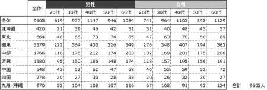
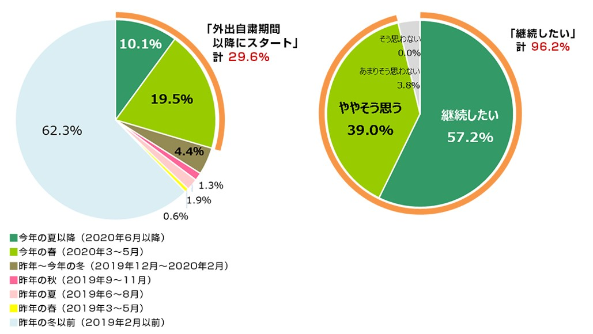

4. 家庭菜園SNS

作品概要
テーマ
IoTの普及を目指したアプリのUIプロトタイプデザイン
大学のUI作品制作の課題として制作した。
コンセプト
SNS + データ
IoTを普及させることを想定し、SNS + データをコンセプトに制作した。
作品画面


SNSのようなデザイン
自分の育てている野菜をシェアするためのSNSのようなデザインにし、IoTとは無関係に見える作品にした。
特徴
データの共有・比較
このアプリでは、IoTによって取得した土壌データや、野菜を育てるノウハウなどを共有・比較ができ、家庭でも質の高い野菜を育てることができるようになる。 家庭菜園をより楽しく、簡単にできるようになることを「アプリの目的」とし、それを気にIoTが普及することを「アプリの目標」として制作した。
仕様ツール・制作期間
プロトタイプ制作: AdobeXD
イラスト制作： AdobeIllustrator
制作期間：約1ヵ月
制作工程
1.問題提起
MONOist
IoTが普及していない
私の所属している学部の学部長はIoTの権威であり、自身もIoTを学んでいることから、社会がIoT化を進めることで、データ解析による生産効率の向上やリスクマネジメントなどのメリットがあることを理解している。 しかし、現在の日本ではIoT化はほとんど進んでおらず、IoT自体を知らない人が大半を占めている。
2.ターゲット
決定権のある中間管理職の年齢層
企業や工場などにIoT導入に関する決定権をもつ中間管理職の人たちがIoT自体を理解していない。または、メリットを理解していないことがIoTが普及しないことの要因であると推測した。 IoTの普及を目指したアプリを制作するのであれば、中間管理職が多い年齢層の、40～50代の男性を主なターゲットにするのが最適だと考えた。
3.解決策
タキイ種苗株式会社 「2020年度 野菜と家庭菜園に関する調査」
 趣味から広める
趣味を通じてIoTの素晴らしさを知ってもらうことでビジネス的視点からもIoT導入を検討する人が増え、社会全体のIoT化が進むのではないかと考えた。 40～50代の人の割合が多い趣味として家庭菜園があげられた。外出自粛期間によって家庭菜園を趣味に持つ人が増えたこともあり、畑に小さなIoTデバイスを設置することで野菜の育成環境を取得し、 SNSのようなアプリでデータの共有を行うことで、上手に野菜を育てることが可能になれば、IoTによるデータの取得・共有・分析をより身近に感じてもらうことができ、IoTの普及を手助けすることができるのではないかと考えた。
4.ラフスケッチ
作ってみる 描いてみる
今回はUIプロトタイプデザインを制作することが目的だったので、IoTガジェットのデザインは行わず、畑に設置したIoTデバイスからデータを受け取り、 そのデータをシェアするアプリのUIプロトタイプを制作することにした。ターゲットである40～50代の人は若者よりも新しいアプリになれるのに時間がかかるため、 どこかで見たことがあるという印象を受ける単純なデザインにした。
5.レイアウト

一目でわかるレイアウト
一目でどの野菜に関するデータかを把握できるような単純なレイアウトにし、画像を大きく表示するようにした。
6.データを魅せる
データを楽しく
データ解析と聞くと堅苦しい印象があり、それもIoTの普及が進まない一つの要因であると考えられた。 このアプリではデータをより身近に感じてもらえるように考えているので、データ確認画面では、子供のおもちゃのようなボタンアイコンデザインや、 背景色のべた塗りなどで「スマートさ」よりも「かわいさ」を重視した。
7.配色

スマート農業のような色
ムードボードを作成し、スマート農業のような配色を使用することにした。 白をメインカラーにし、緑・水色をサブカラーとして使用した。
8.フォント
違和感のないフォント
データの解析・共有が主な機能なので、それを邪魔することのないシンプルなフォントが最適だと考えた。 すっきりとしており、明朝体ほどの堅苦しさのない源ノ角ゴシックJPを使用した。
9.解決する問題
IoTの未来を身近に感じる
趣味を通じてIoTを身近に感じることで、企業や工場などのIoT導入に対する障壁を取り除くことができるようになると考えた。
制作を通じて学んだこと
今回の制作は個人的には非常に面白いものができた思ったが、先生方からは好印象ではなかった。 アプリを作る理由やどのようにして作るのかなどを考えることが多く、肝心なUIデザインが地味なものになってしまってたことが原因だと先生方にフィードバックをいただくことで判明した。 なぜ作るのか、どう作るのかは当然重要なことだが、グラフィックデザインをしているということを忘れてはならないということを学んだ。
| トップに戻る | 次の作品 |